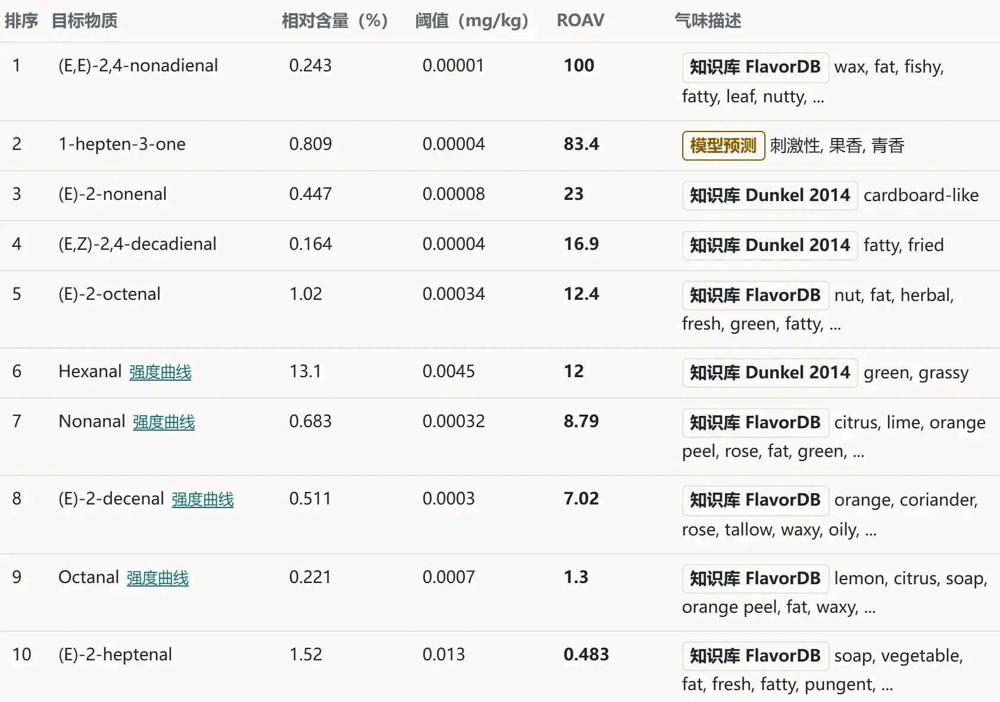
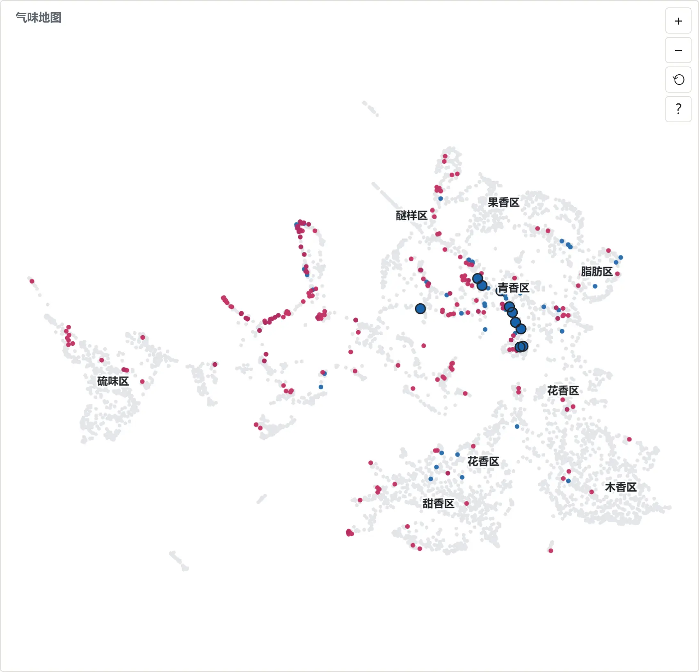
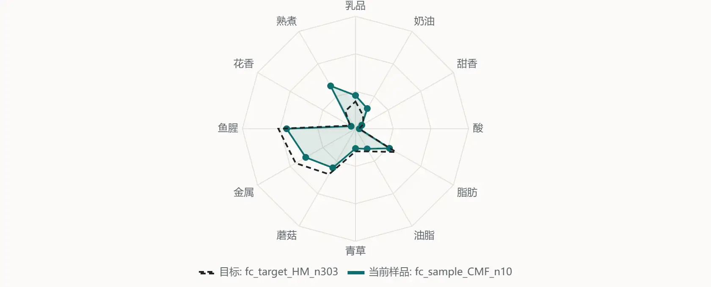

母乳 → 婴儿配方奶粉
用本站工具完成一次完整的风味分析
以一份母乳样品的 GC-MS 原始报告为起点，依次使用本站 7 个在线工具，最终找出婴儿配方奶粉与母乳的风味差距。
背景
母乳是婴儿喂养的金标准。婴儿配方奶粉的研发目标已从“营养母乳化”“结构母乳化”进一步迈向“风味母乳化”：婴儿配方奶粉的宏量营养素已较接近母乳，但在风味上仍有明显差异，这会影响婴儿的接受度，也可能影响婴儿日后的饮食偏好。弄清母乳的关键风味物质及其与配方奶粉的差别，是风味母乳化的第一步。
本页以一份母乳样品为例，演示完整的分析流程。样品 HM_Test 是 Cui 等（2026，Food Bioscience，doi:10.1016/j.fbio.2026.110162）50 份母乳中的一份，挥发物组成接近 50 份的平均水平（按三种距离计算，与平均值的接近程度分别排第 2、3、2 位）。第 1~8 步只使用这份样品和已发表数据；第 9 步使用作者课题组 303 份母乳和 20 个婴儿配方奶粉样品的平均数据。每一步依次说明要回答的问题、所用工具（点击链接可载入相同的输入）、结果、解读和局限。
第 1 步 GC-MS 数据处理
问题：一份母乳的 GC-MS 峰表里有哪些目标物质，各占多少？
工具：GC-MS 风味解读，示例 4（HM_Test 的原始仪器导出报告，Agilent MassHunter 谱库检索结果，345 条峰记录）。标准文件由 Cui 等（2026）补充材料 Table S1 的 75 个物质和保留时间生成；保留时间范围 ± 0.3 min，相对含量按目标物质归一化，阈值用“作者课题组取值”。
| 物质 | CAS 号 | 实际保留时间（min） | 相对含量（%） |
|---|---|---|---|
| 乙酸 | 64-19-7 | 14.307 | 0.51 |
| 丁酸 | 107-92-6 | 18.795 | 2.97 |
| 己酸 | 142-62-1 | 24.368 | 24.48 |
| 辛酸 | 124-07-2 | 29.596 | 33.01 |
| 壬酸 | 112-05-0 | 32.027 | 0.17 |
| 癸酸 | 334-48-5 | 34.422 | 14.51 |
| 十二酸 | 143-07-7 | 38.870 | 2.72 |
| 己醛 | 66-25-1 | 6.275 | 13.07 |
| 庚醛 | 111-71-7 | 8.321 | 0.15 |
| 辛醛 | 124-13-0 | 10.699 | 0.22 |
| (E)-2-庚烯醛 | 18829-55-5 | 11.480 | 1.52 |
| 壬醛 | 124-19-6 | 13.107 | 0.68 |
| (E)-2-辛烯醛 | 2548-87-0 | 13.946 | 1.02 |
| (E,E)-2,4-庚二烯醛 | 4313-03-5 | 14.739 | 0.43 |
| 苯甲醛 | 100-52-7 | 16.126 | 0.12 |
| (E)-2-壬烯醛 | 18829-56-6 | 16.575 | 0.45 |
| (E)-2-癸烯醛 | 3913-81-3 | 19.326 | 0.51 |
| (E,E)-2,4-壬二烯醛 | 5910-87-2 | 20.748 | 0.24 |
| (E,Z)-2,4-癸二烯醛 | 25152-83-4 | 22.368 | 0.16 |
| 1-戊醇 | 71-41-0 | 9.895 | 0.15 |
| 1-庚烯-3-酮 | 2918-13-0 | 11.002 | 0.81 |
| 辛酸甲酯 | 111-11-5 | 13.025 | 0.22 |
| 辛酸乙酯 | 106-32-1 | 14.121 | 0.15 |
| 癸酸甲酯 | 110-42-9 | 18.148 | 0.14 |
| D-柠檬烯 | 5989-27-5 | 8.607 | 1.22 |
| 2-戊基呋喃 | 3777-69-3 | 9.499 | 0.15 |
| 2-丙基呋喃 | 4229-91-8 | 15.450 | 0.22 |
| 合计（27 个物质） | 100.00 | ||
共找到 27 个目标物质（按这 27 个物质归一化）。相对含量最高的是辛酸、己酸、癸酸和己醛。
解读：与作者开发的数据处理程序对比（同一份峰表）。作者程序在 125 个目标物质中找到 29 个，并按这 29 个归一化；本工具在 Table S1 的 75 个物质中找到 27 个（1-癸醇和 3-庚烯酸不在 Table S1 中），按这 27 个归一化，因此各物质的数值约为作者程序的 1.002 倍。统一按这 27 个物质归一化后，两者全部一致，最大相差 0.005 个百分点。Table S1 的保留时间比 HM_Test 的实测值早 0.1~0.3 min，因此范围取 ± 0.3 min；取 ± 0.2 min 会漏掉壬醛、(E)-2-壬烯醛等 4 个物质，取 ± 0.1 min 只能找到 16 个。
局限：相对含量是半定量结果（未加内标）。工具不重新定性，直接采用谱库检索结果；保留时间范围越大，越容易把误鉴定的峰也纳入（本例未出现）。2,4-二叔丁基苯酚、2-乙基-1-己醇、2-苯氧基乙醇和异佛尔酮是采样容器和实验耗材带入的迁移物（Table S1 注 A），保留在标准文件中，但在 HM_Test 中均未检出。
第 2 步 关键风味物质
问题：哪些物质对 HM_Test 的气味贡献最大？
工具：同一页的“风味解读”一步，计算相对气味活性值（ROAV）；示例 4 已自动选好“作者课题组取值”。
| 物质 | 相对含量（%） | 阈值（μg/kg，水中） | ROAV |
|---|---|---|---|
| (E,E)-2,4-壬二烯醛 | 0.243 | 0.01 | 100 |
| 1-庚烯-3-酮 | 0.809 | 0.04 | 83.4 |
| (E)-2-壬烯醛 | 0.447 | 0.08 | 23.0 |
| (E,Z)-2,4-癸二烯醛 | 0.164 | 0.04 | 16.9 |
| (E)-2-辛烯醛 | 1.02 | 0.34 | 12.4 |
| 己醛 | 13.1 | 4.5 | 12.0 |
| 壬醛 | 0.683 | 0.32 | 8.79 |
| (E)-2-癸烯醛 | 0.511 | 0.3 | 7.02 |
| 辛醛 | 0.221 | 0.7 | 1.30 |

解读：ROAV ≥ 1 的关键风味物质共 9 个（8 个醛、1 个酮），其中 (E,E)-2,4-壬二烯醛（ROAV 100）和 1-庚烯-3-酮（83.4）贡献最大。己醛在这 9 个物质中含量最高（13.1%），但阈值较高，ROAV 只排第 6。ROAV 使用水中觉察阈值，取自 van Gemert（2011）的汇编（作者课题组取值）。
局限：ROAV 只反映样品内各物质的相对贡献，不能说明是否能被闻到；阈值是水中的，不是母乳基质中的。
第 3 步 气味预测
问题：模型预测的气味与文献中的气味描述一致吗？
工具：气味预测（图神经网络，预测 138 个气味描述词的概率）。表中每个物质都链接到它的预测结果；文献描述取自 Flavornet（Acree & Arn，flavornet.org），中文按模型的描述词翻译。
| 物质（点击打开预测） | 模型预测前 5 个描述词（%） | Flavornet 描述 | 对照 |
|---|---|---|---|
| (E,E)-2,4-壬二烯醛 | 青香 74、脂肪 67、果香 45、蔬菜 40、醛香 35 | 脂肪、蜡香、青香 | 青香第 1 位，脂肪第 2 位；蜡香第 12 位 |
| 1-庚烯-3-酮 | 刺激性 41、果香 39、青香 32、金属 31、奶酪 30 | 金属 | 金属第 4 位 |
| (E)-2-壬烯醛 | 脂肪 65、青香 57、柑橘 54、醛香 52、蜡香 44 | 黄瓜、脂肪、青香 | 脂肪第 1 位，青香第 2 位；黄瓜第 10 位 |
| (E,Z)-2,4-癸二烯醛 | 脂肪 69、青香 66、醛香 40、果香 39、柑橘 34 | 油炸、脂肪 | 脂肪第 1 位；模型没有“油炸” |
| (E)-2-辛烯醛 | 青香 75、脂肪 66、醛香 52、果香 50、柑橘 43 | 青香、坚果、脂肪 | 青香第 1 位，脂肪第 2 位；坚果第 29 位 |
| 己醛 | 青香 82、果香 62、脂肪 52、醛香 49、清新 35 | 青草、牛脂、脂肪 | 脂肪第 3 位；青草第 9 位；模型没有“牛脂” |
| 壬醛 | 柑橘 74、脂肪 61、醛香 58、蜡香 53、橙子 49 | 脂肪、柑橘、青香 | 柑橘第 1 位，脂肪第 2 位；青香第 6 位 |
| (E)-2-癸烯醛 | 脂肪 65、柑橘 55、醛香 49、蜡香 48、青香 47 | 牛脂 | 模型没有“牛脂”，无法对照 |
| 辛醛 | 柑橘 76、醛香 63、脂肪 60、青香 60、橙子 52 | 脂肪、皂样、柠檬、青香 | 脂肪第 3 位，青香第 4 位；皂样第 11 位，柠檬第 23 位 |
解读：9 个物质中，8 个至少有一个 Flavornet 描述词出现在模型预测的前 5 位，包括 1-庚烯-3-酮的金属味（第 4 位）。例外是 (E)-2-癸烯醛：Flavornet 只给出“牛脂”，而模型的 138 个描述词中没有这个词。没有进入前 5 位的描述词有：黄瓜（(E)-2-壬烯醛，第 10 位）、蜡香（(E,E)-2,4-壬二烯醛，第 12 位）、青草（己醛，第 9 位）、青香（壬醛，第 6 位）、皂样和柠檬（辛醛，第 11、23 位）以及坚果（(E)-2-辛烯醛，第 29 位）；“油炸”和“牛脂”不在模型的描述词中。名次按全部 138 个描述词计算。
局限：这 9 个都是常见物质，都在模型的数据集中（气味预测页会提示）：7 个在训练集，(E,Z)-2,4-癸二烯醛和辛醛在测试集，因此这里的吻合不能说明模型对新分子的预测能力。Flavornet 汇编的是文献中 GC-O 检出的气味物质及其描述，不是本研究的嗅闻结果。模型不区分顺反异构，(E,Z)- 和 (E,E)-2,4-癸二烯醛的预测相同。
第 4 步 强度曲线与 FD 对照
问题：按气相阈值估算的结果与 AEDA 得到的 FD 排序一致吗？
工具：气相强度曲线，使用 Wakayama 等（2019）的剂量-强度曲线和气相阈值。用 HM_Test 的相对含量除以气相阈值，与 Cui 等（2026）中 50 份母乳混合样的 FD 对照。
解读：己醛、辛醛的比值高（FD 均为 64），壬醛、庚醛的比值低（FD 分别为 4 和 1），两者排序一致。
局限：只有这 4 个醛有强度曲线；(E,E)-2,4-壬二烯醛、1-庚烯-3-酮、(E)-2-壬烯醛、(E)-2-辛烯醛等其余关键风味物质在 Wakayama 等（2019）的数据中没有曲线，无法核对。
第 5 步 原料检索
问题：哪些分子的气味与 1-庚烯-3-酮（ROAV 第 2）相近？它在哪些食物中出现过？
工具：原料与替代物检索，模式 B（按预测气味的余弦相似度找相近分子），以及风味知识库中母乳的检出物质和关键风味物质。
与 1-庚烯-3-酮最相近的是 (Z)-1,5-辛二烯-3-酮（0.978）和 1-辛烯-3-酮（0.977），其中 1-辛烯-3-酮也是 Cui 等（2026）鉴定的关键风味物质（FD 64，金属味）。醛之间的预测气味高度相似（如壬醛与辛醛为 0.995），模型把它们归为同一类脂肪、柑橘样的醛香，彼此替代意义不大。
知识库随研究扩充：最初知识库只有 FlavorDB2 的数据，1-庚烯-3-酮没有任何食物来源，“Milk Human”只关联 3 个分子，母乳的关键风味物质一个也没有收录。并入 FooDB 后情况没有改变，因为 FooDB 的母乳条目都是脂肪酸、氨基酸、维生素等营养成分。因此作者把已发表的母乳数据加入知识库（见知识库 7.5 更新记录），现在母乳页收录了 Cui 等（2026）的检出物质和 10 个关键风味物质。
婴儿配方奶粉不得加香：GB 2760-2024 表 B.1“不得添加食品用香料、香精的食品名单”列有 13.01 婴幼儿配方食品。该表脚注 a 规定，较大婴儿和幼儿配方食品中可以使用香兰素、乙基香兰素和香荚兰豆浸膏（提取物），最大使用量分别为 5 mg/100 mL、5 mg/100 mL 和按照生产需要适量使用；“凡使用范围涵盖0~6个月婴幼儿配方食品不得添加任何食用香料”。因此在婴儿配方奶粉中，无法通过直接添加关键风味物质来改良风味，只能从前体入手（脂肪酸组成、油脂来源），见第 7~9 步。
局限：模式 B 只比较预测的气味，不能说明分子之间能否相互替代；FlavorDB2 只记录“有/无”，没有含量。
第 6 步 气味地图
问题：母乳中检出的分子在气味地图上分布在哪里？
工具：气味地图，母乳与牛乳叠加（5000 多个分子按预测气味排列）。

知识库中与母乳关联的分子共 100 个，其中 99 个在气味地图上（硫胺素不在地图的分子库中）：78 个来自 Cui 等（2026），29 个来自 FooDB（10 个两者都有），2 个只来自 FlavorDB2。这 99 个分子主要落在脂肪区和青香区（预测首位描述词为脂肪的 22 个、青香的 20 个，合计 42%）；牛乳的 207 个分子分布更分散（无气味 29、果香 28、脂肪 22、青香 16、酚样 12、鱼腥 11、硫味 9，脂肪和青香合计仅 18%）。
解读：这一分布与“母乳风味以脂质氧化产生的醛、酮为主”的认识一致。
局限：两边的数据来源不对等，母乳数据来自作者已发表的研究，牛乳数据来自 FlavorDB2 和 FooDB，因此不能据此认为牛乳缺少这些物质（不少是被隐藏的批量条目，或公开数据库未收录）。
第 7 步 滋味
问题：如果从前体入手，亚油酸和 α-亚麻酸本身是什么滋味？选这两种，是因为在 Cui 等（2026）的随机森林重要性排序中，二者是母乳风味最主要的前体（归一化得分 1.00 和 0.83，明显高于其他前体）。
工具：味觉预测（图神经网络，判断甜、苦、鲜、无味；判断阈值甜 58%、苦 42%、鲜 18%，由验证集选出）。
解读：亚油酸和 α-亚麻酸都被预测为苦，且超过判断阈值。但两者都在训练数据中（标签为苦），因此这只说明模型复现了数据集的记录，而这一记录与文献一致：Stephan 等（2000）发现游离亚油酸、亚麻酸在乳液中的苦味阈值最低，是大豆卵磷脂苦味的主要来源；Gläser 等（2021）发现豌豆蛋白中的游离 α-亚麻酸和亚油酸是苦味的关键来源；Huseynli 等（2025）在葵花籽压榨饼中鉴定的苦味物质包括 α-亚麻酸、亚油酸、油酸、棕榈酸和硬脂酸；Cheon 等（2021）报道 C18 游离脂肪酸主要被描述为苦。二十碳酸不在训练数据中，同样被预测为苦（56%），与 Cheon 等（2021）的结论方向一致，但单个例子不能证明模型的能力。
需要注意，婴儿配方奶粉中的脂肪酸以甘油三酯（油脂）形式加入。Mattes（2009）指出，甘油三酯本身不是有效的滋味刺激，起作用的是游离脂肪酸；模型对甘油三酯的预测属于外推，这里不采用。
补充：母乳的游离氨基酸
母乳中的蛋白质主要以完整蛋白形式存在，其次是多肽；游离氨基酸占比虽小，却可能是滋味的主要贡献者之一。Agostoni 等（2000）和 Chuang 等（2005）都报道母乳的游离氨基酸含量远高于配方奶粉。下表列出 Cui 等（2026）Table 2 中 50 份母乳的 17 种游离氨基酸，其中谷氨酸含量最高（704 μmol/L，占 17 种总量的 49.2%）。
| 氨基酸 | 母乳（μmol/L） | 甜（%） | 苦（%） | 鲜（%） | 超过判断阈值 | 数据集记录 |
|---|---|---|---|---|---|---|
| 谷氨酸（Glu） | 704 | 41 | 6.2 | 96 | 鲜 | 甜、鲜、酸、咸 |
| 丙氨酸（Ala） | 161 | 96 | 64 | 2.6 | 甜、苦 | 甜、苦 |
| 苏氨酸（Thr） | 97 | 96 | 34 | 34 | 甜、鲜 | 甜 |
| 天冬氨酸（Asp） | 78 | 40 | 6.6 | 92 | 鲜 | 甜、鲜、酸、咸 |
| 脯氨酸（Pro） | 54 | 80 | 72 | 0.1 | 甜、苦 | 甜、苦 |
| 缬氨酸（Val） | 53 | 93 | 82 | 3.8 | 甜、苦 | 甜、苦 |
| 甘氨酸（Gly） | 51 | 82 | 11 | 0.1 | 甜 | 甜 |
| 赖氨酸（Lys） | 49 | 83 | 53 | 2.2 | 甜、苦 | 甜、苦 |
| 丝氨酸（Ser） | 29 | 95 | 16 | 6.9 | 甜 | 甜 |
| 亮氨酸（Leu） | 28 | 85 | 84 | 0.2 | 甜、苦 | 甜、苦 |
| 组氨酸（His） | 27 | 93 | 52 | 2.5 | 甜、苦 | 甜、苦 |
| 精氨酸（Arg） | 24 | 4.0 | 98 | 0.3 | 苦 | 甜、苦 |
| 胱氨酸（Cys） | 22 | 9.9 | 9.1 | 31 | 鲜 | 无味 |
| 酪氨酸（Tyr） | 19 | 77 | 62 | 2.7 | 甜、苦 | 甜、苦 |
| 苯丙氨酸（Phe） | 14 | 56 | 66 | 0.3 | 苦 | 甜、苦 |
| 异亮氨酸（Ile） | 11 | 90 | 77 | <0.1 | 甜、苦 | 甜、苦 |
| 甲硫氨酸（Met） | 10 | 88 | 25 | 0.3 | 甜 | 甜、苦 |
解读：预测结果与一般认识大体一致：谷氨酸、天冬氨酸呈鲜味；丝氨酸、甘氨酸、苏氨酸、丙氨酸呈甜味；亮氨酸、异亮氨酸、苯丙氨酸呈苦味。由于这些氨基酸都在训练数据中，这只能说明工具在适用范围内工作正常。苏氨酸（鲜 34%）和胱氨酸（鲜 31%）超过了鲜味判断阈值，但数据集记录中并不鲜，这是模型本身的偏差。
局限：模型不考虑浓度，也不考虑基质和协同作用；表中多数分子都在训练数据中。不能用于安全性评估。
第 8 步 法规
问题：1-庚烯-3-酮能作为香料使用吗？前体物质有哪些法规要求？
工具：法规查询（1-庚烯-3-酮，以 1-辛烯-3-酮作对照）。
按名称的各种写法和 CAS 号（2918-13-0）检索中国 GB 2760-2024 表 B.2 和 B.3、欧盟 Union list（2026-02-16 合并版）、美国 21 CFR 172/182/184/189 和 FDA 清单（Substances Added to Food）的原文，均未查到 1-庚烯-3-酮（截至网站数据日期）；GB 2760 中只有它的异构体 4-庚烯-3-酮（S1262）。也就是说，即使不考虑表 B.1，它也没有列入这三地的香料名单。作为对照，用同样方法可以在中国（S0219）、欧盟和 FDA 清单（FEMA 2677）中查到 1-辛烯-3-酮，说明检索方法有效。
婴儿配方奶粉不得加香（GB 2760-2024 表 B.1，见第 5 步）；前体物质则由营养成分标准规定：
| 成分 | GB 10765-2021 表 1 | 欧盟 (EU) 2016/127 附件 I |
|---|---|---|
| 亚油酸 | 0.07~0.33 g/100 kJ（0.3~1.4 g/100 kcal） | 120~300 mg/100 kJ |
| α-亚麻酸 | ≥ 12 mg/100 kJ（≥ 50 mg/100 kcal），上限未规定 | 12~24 mg/100 kJ |
| DHA | 可选（表 4）：3.6~9.6 mg/100 kJ；添加 DHA 时 ARA 至少等量，ARA ≤ 19.1 mg/100 kJ | 必需：4.8~12 mg/100 kJ |
GB 10765-2021 还要求亚油酸与 α-亚麻酸之比为 5:1~15:1。
局限：网站的法规查询只覆盖香料名单，不含营养成分标准；法规以官方最新原文为准。
第 9 步 风味改良
问题：婴儿配方奶粉与母乳的风味差异在哪里？应朝哪个方向改良？
工具：乳品风味改良的“我的 GC-MS 数据”，点击直接载入母乳对比 CMF 或母乳对比 POF。输入是作者课题组各类样品的平均相对含量，按工具的 CSV 格式整理（母乳 HM（n=303，目标）、牛乳基配方奶粉 CMF（n=10）、植物油基配方奶粉 POF（n=10），均可下载）；母乳为目标，两类配方奶粉分别作为当前样品；阈值为“作者课题组取值”（写在 CSV 中），与课题组 27 个关键风味物质的阈值完全一致。这些数据与 Cui 等（2026）的数据使用同一台仪器（Agilent 8890B）和同一种萃取头（DVB/CAR/PDMS）测得。
母乳的 ROAV：工具与课题组计算值对照
| 工具 排序 | 物质 | 工具 计算值 | 课题组 计算值 | 课题组 排序 |
|---|---|---|---|---|
| 1 | (E,E)-2,4-壬二烯醛 | 100 | 51.94 | 1 |
| 2 | 1-辛烯-3-酮 | 98.5 | 46.18 | 2 |
| 3 | 1-庚烯-3-酮 | 92.3 | 37.99 | 3 |
| 4 | 己醛 | 53.5 | 33.05 | 4 |
| 5 | (E)-2-壬烯醛 | 30.8 | 17.84 | 5 |
| 6 | 壬醛 | 22.1 | 14.01 | 6 |
| 7 | (E)-2-辛烯醛 | 9.05 | 5.14 | 8 |
| 8 | 辛醛 | 8.35 | 5.42 | 7 |
| 9 | (E)-2-癸烯醛 | 4.62 | 2.50 | 10 |
| 10 | (E,Z)-2,4-癸二烯醛 | 3.85 | 4.64 | 9 |
| 11 | 庚醛 | 3.03 | 2.11 | 11 |
| 12 | (E,E)-2,4-癸二烯醛 | 2.2 | 0.85 | 12 |
| 13 | 2,3-辛二酮 | 1.77 | 0.84 | 13 |
| 14 | 1-辛烯-3-醇 | 1.23 | - | - |
课题组逐个样品计算 ROAV 再求平均，工具用平均含量计算，所以数值不同（工具中最大值固定为 100），只比较排序。主要物质排序一致：前 6 位（(E,E)-2,4-壬二烯醛、1-辛烯-3-酮、1-庚烯-3-酮、己醛、(E)-2-壬烯醛、壬醛）和第 11~13 位完全相同。例外有两对相邻物质互换：(E)-2-辛烯醛与辛醛（第 7、8 位），(E)-2-癸烯醛与 (E,Z)-2,4-癸二烯醛（第 9、10 位）。工具算出 ROAV ≥ 1 的物质比课题组多 3 个：(E,E)-2,4-癸二烯醛和 2,3-辛二酮（课题组计算值都小于 1），以及 1-辛烯-3-醇（课题组的母乳结果中未列）。
配方奶粉与母乳的差距

牛乳基配方奶粉（CMF）：共 18 个物质参与比较（数值为贡献占比之差，单位为百分点）。母乳中更高的：(E)-2-壬烯醛 +10.0（CMF 未检出）、1-辛烯-3-酮 +7.0、1-庚烯-3-酮 +5.4、己醛 +3.6、(E,E)-2,4-壬二烯醛 +2.5；CMF 中更高的：二甲基三硫 −9.8（母乳未检出）、二甲基二硫 −6.4（母乳未检出）、(E,E)-2,4-癸二烯醛 −5.6、2-庚酮 −5.3（母乳未检出）、戊醛 −3.9、(E,Z)-2,4-癸二烯醛 −3.3。
植物油基配方奶粉（POF）：共 20 个物质参与比较（数值为贡献占比之差，单位为百分点）。母乳中更高的：(E)-2-壬烯醛 +10.0（POF 未检出）、1-庚烯-3-酮 +5.8、1-辛烯-3-酮 +5.7、(E,E)-2,4-壬二烯醛 +4.7、(E,Z)-2,4-癸二烯醛 +2.7；POF 中更高的：戊醛 −7.0、二甲基三硫 −6.7（母乳未检出）、2-庚酮 −5.1（母乳未检出）、二甲基二硫 −3.8（母乳未检出）、(E,E)-2,4-癸二烯醛 −2.3。
解读：两类配方奶粉与母乳的差异方向相近：母乳中 (E)-2-壬烯醛、1-庚烯-3-酮、1-辛烯-3-酮和 (E,E)-2,4-壬二烯醛的贡献更大。这与课题组的结论一致：母乳的风味物质以不饱和醛、酮为主，其中 1-庚烯-3-酮和 1-辛烯-3-酮常被描述为金属味（1-辛烯-3-酮：蘑菇、金属）。配方奶粉中二甲基二硫和二甲基三硫更高，课题组认为它们带来洋葱、大蒜样气味，通常由甲硫氨酸的 Strecker 降解产生。对母乳中更高的物质，工具只给方向、不给添加量，并提示婴幼儿配方食品不得加香，只能从原料、工艺和前体调整；配方奶粉中更高的物质需要从原料或工艺方向降低（如控制氧化、热处理和储存条件）。
脂质来源（课题组数据）：10 个 CMF 都含生牛乳；OPO 结构脂（1,3-二油酸-2-棕榈酸甘油三酯）见于 6 个 CMF 和 5 个 POF；POF 的脂质来源中没有生牛乳或稀奶油，主要是 OPO 和植物油（大豆油、葵花籽油、椰子油、菜籽油、棕榈油等），其中 2 个另加 DHA。课题组指出，CMF 和 POF 因组成不同而香气不同。
局限：输入是每类样品的平均值，丢失了样品间的差异，配方奶粉每类只有 10 个样品；ROAV 是半定量结果，两边的数值不能直接相比，只比较贡献占比；这一步只给方向，不给添加量。
小结
这个案例从一份原始仪器报告出发，依次用 7 个工具完成：数据处理（结果与作者程序一致）→ 筛选关键风味物质（ROAV）→ 用文献气味描述和 FD 核对 → 发现法规不允许加香，转向前体 → 检查前体的滋味和营养标准 → 用 303 份母乳和 20 个配方奶粉样品的平均数据找出差距和改良方向。每个工具单独只回答一个小问题，连起来才能从一张峰表走到改良方向。
| 步骤 | 工具 | 主要局限 |
|---|---|---|
| 1 | GC-MS 数据处理 | 半定量；依赖谱库鉴定；标准文件的保留时间有偏移 |
| 2 | 关键风味物质 | ROAV 是样品内相对值，阈值是水中的 |
| 3 | 气味预测 | 物质都在数据集中；不区分顺反异构 |
| 4 | 强度曲线 | 只有 4 个醛类有曲线 |
| 5 | 原料检索 | 只比较预测气味；婴儿配方奶粉不得加香 |
| 6 | 气味地图 | 母乳与牛乳的数据来源不对等 |
| 7 | 滋味 | 不考虑浓度和基质；多数分子在训练数据中 |
| 8 | 法规 | 法规查询只含香料名单 |
| 9 | 风味改良 | 输入为平均值；只给方向，不给添加量 |
数据来源
- 样品与关键风味物质：Cui 等（2026，Food Bioscience，doi:10.1016/j.fbio.2026.110162），补充材料 Table S1、Table 1、Table 2；样品 HM_Test 为 Cui 等（2026）中编号 HM0031。
- 婴儿配方奶粉与 303 份母乳：作者课题组数据。
- 阈值：van Gemert（2011）Odour Thresholds，作者课题组取值。
- 气味描述：Flavornet（Acree & Arn，flavornet.org）。
- 气相强度曲线：Wakayama H, et al. Ind Eng Chem Res 2019, doi:10.1021/acs.iecr.9b01225。
- 食物来源：FlavorDB2（CC BY-NC-SA 3.0）、FooDB（2020-04-07 版，CC BY-NC 4.0）和作者已发表数据。
- 法规：GB 2760-2024、GB 10765-2021、Regulation (EC) No 1334/2008 附件 I、Regulation (EU) 2016/127、21 CFR 与 FDA “Substances Added to Food”。
- Stephan A, Steinhart H. Bitter taste of unsaturated free fatty acids in emulsions: contribution to the off-flavour of soybean lecithin. Eur Food Res Technol 2000, 212: 17-25, doi:10.1007/s002170000216.
- Gläser P, Mittermeier-Kleßinger VK, Spaccasassi A, et al. Quantification and bitter taste contribution of lipids and their oxidation products in pea-protein isolates (Pisum sativum L.). J Agric Food Chem 2021, 69: 8768-8776, doi:10.1021/acs.jafc.1c02889.
- Huseynli L, Gigl M, Müller J, et al. Characterization of bitter off-taste stimuli in sunflower press cake using the sensomics approach. J Agric Food Chem 2025, 73: 23548-23559, doi:10.1021/acs.jafc.5c07283.
- Cheon E, Mattes RD. Perceptual quality of nonesterified fatty acids varies with fatty acid chain length. Chem Senses 2021, 46: bjab023, doi:10.1093/chemse/bjab023.
- Mattes RD. Is there a fatty acid taste? Annu Rev Nutr 2009, 29: 305-327, doi:10.1146/annurev-nutr-080508-141108.
- Agostoni C, Carratù B, Boniglia C, et al. Free amino acid content in standard infant formulas: comparison with human milk. J Am Coll Nutr 2000, 19: 434-438, doi:10.1080/07315724.2000.10718943.
- Chuang CK, Lin SP, Lee HC, et al. Free amino acids in full-term and pre-term human milk and infant formula. J Pediatr Gastroenterol Nutr 2005, 40: 496-500, doi:10.1097/01.mpg.0000150407.30058.47.